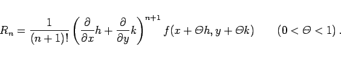

Inhalt Index DeskTop Bronstein

 Differentialrechnung Differentiation von Funktionen von mehreren Veränderlichen Vollständiges Differential und Differentiale höherer Ordnung Satz von Taylor für Funktionen von mehreren Veränderlichen
Differentialrechnung Differentiation von Funktionen von mehreren Veränderlichen Vollständiges Differential und Differentiale höherer Ordnung Satz von Taylor für Funktionen von mehreren Veränderlichen


| f(x,y) | = | ||
| (6.50b) |
| f(x+h, | |||
| (6.50c) |
Der Ausdruck für das Restglied lautet
|  | (6.50d) |